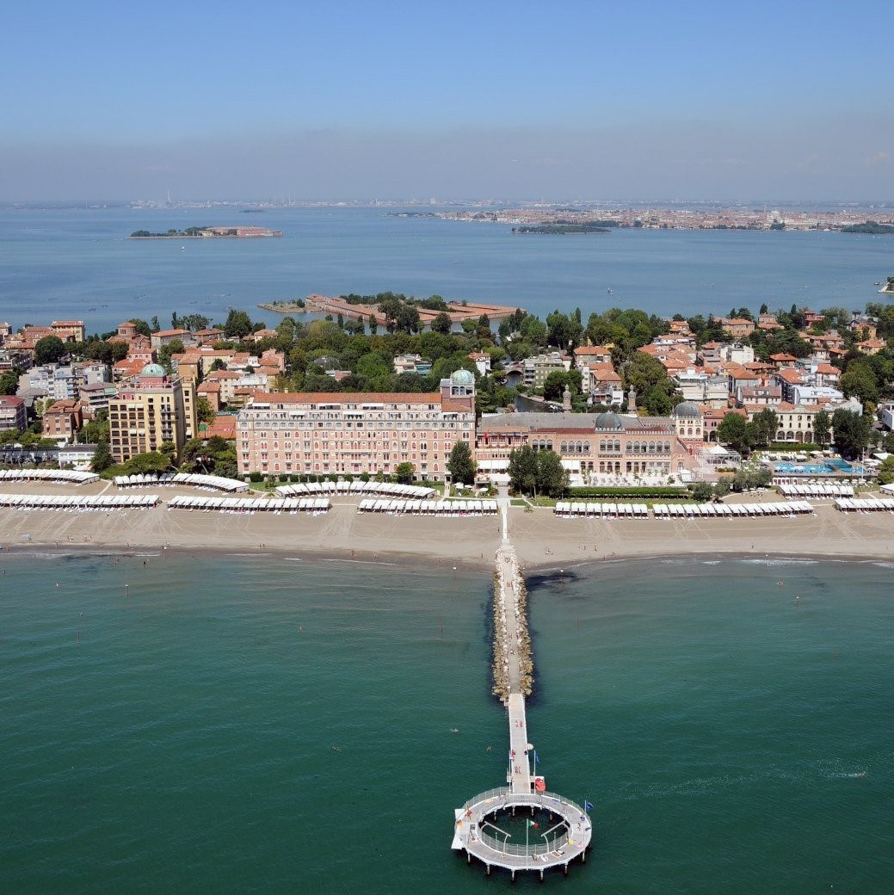

Caterina & Tommaso
Ci sposeremo sabato pomeriggio il 9 Luglio 2022 alle ore 14.30 nella sala "Sala degli Stucchi" di Ca' Farsetti, a Venezia.
-

14.30
Cerimonia
La cerimonia avrà luogo nella Sala degli Stucchi di Ca' Farsetti, San Marco 4136, Venezia. L'accesso alla "Sala degli Stucchi" avviene dall'ingresso presso il lato del Canal Grande, in Riva del Carbon.
-

15.30
Spostamento in barca
Dopo la cerimonia una barca verrà a prendere gli invitati, portandoli fino alla fermata del Casinò del Lido di Venezia.
-

16.30
Festeggiamenti
Proseguiremo i festeggiamenti all'Hotel Excelsior, in Lungomare Guglielmo Marconi 41, al Lido di Venezia. In particolare la festa e la cena avrà luogo nella "Sala degli Stucchi" (si, la sala si chiama come quella della cerimonia, ma è un caso).
-

17.00
Brindisi
Prima di cominciare la festa ci sarà un brindisi in "terrazza dei fiori" con il discorso dei testimoni.
-

18.30
Cena
Per la cena ci sposteremo nella famosa "Sala Stucchi" ed abbiamo scelto per voi un menu a base di pesce, se avete intolleranze alimentai o allergie fatecelo sapere tramite messaggio o mail, così da poter studiare per voi un menù dedicato.
-